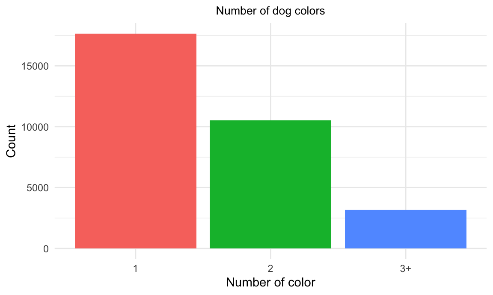
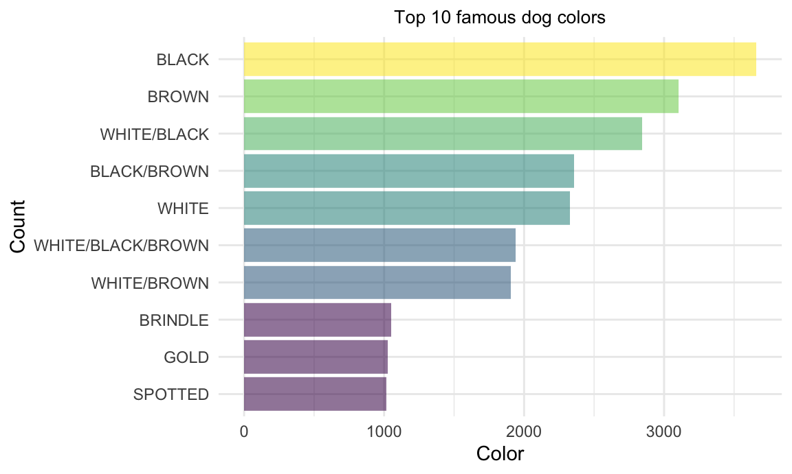
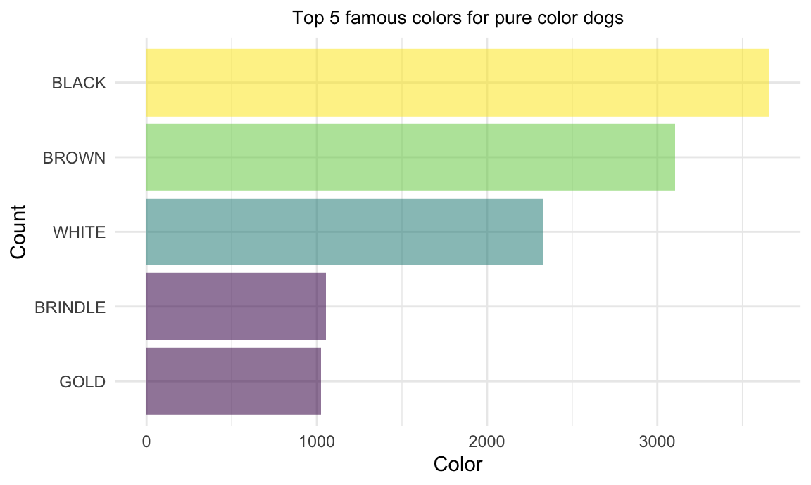
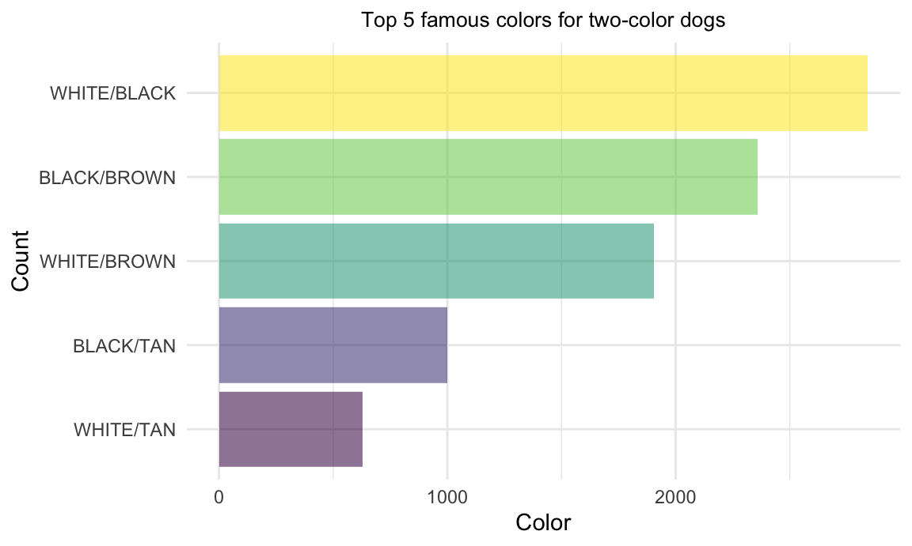
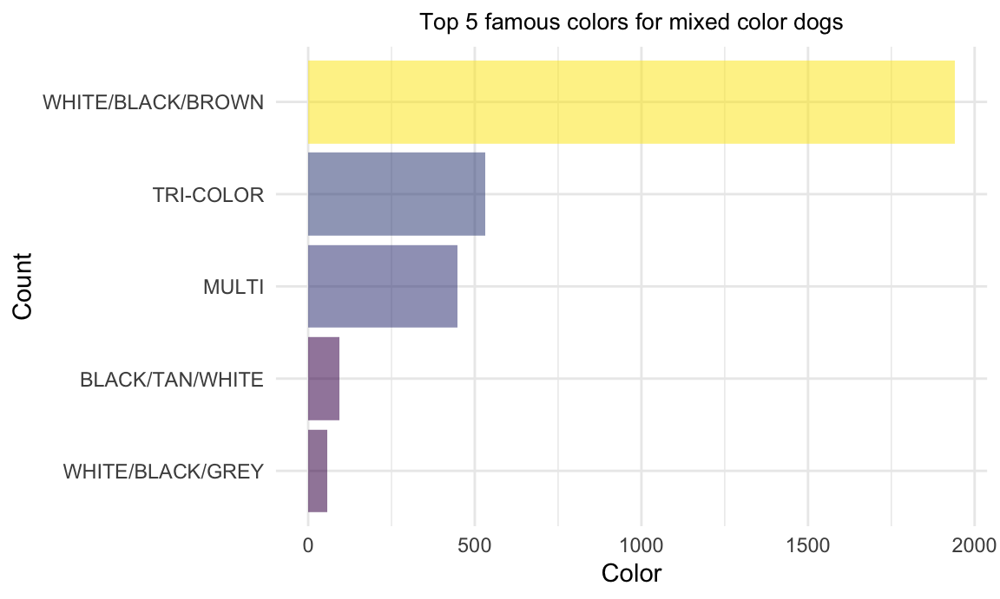
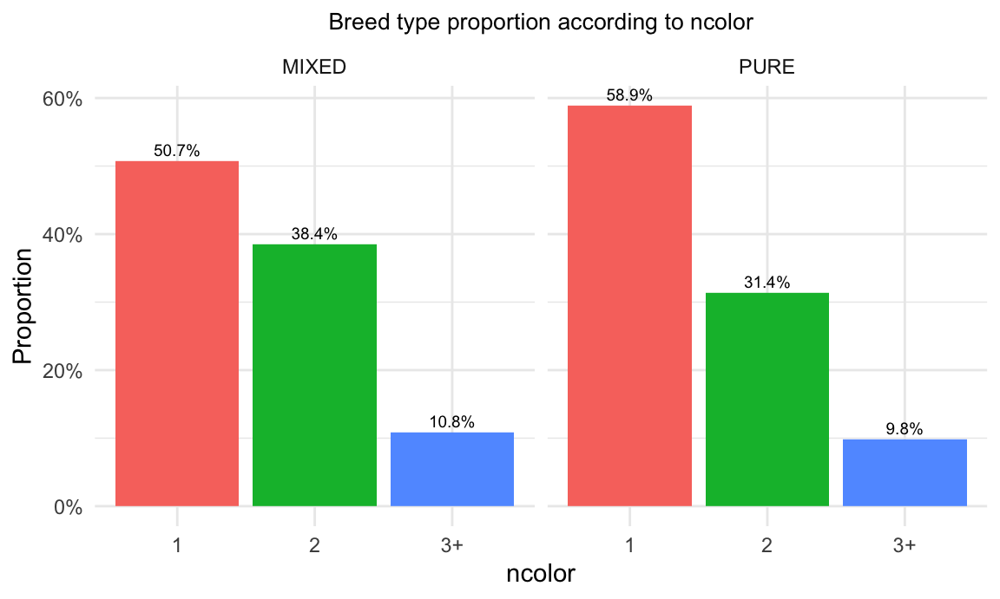
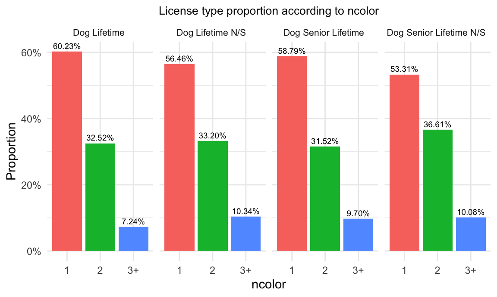
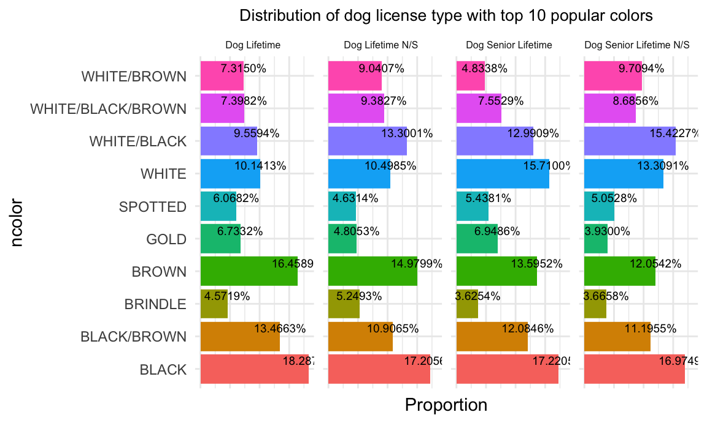

In this page, you are able to find some information about ‘color’ based on the dataset, including analysis of color itself as well as attempts of finding it’s potential relationship with breed and license types.
Due to the large quantity of the dataset, the number of “.” and “OTHER” is comparatively less so we decide to delete them. Values of “BLACK WITH WHITE” sounds equal to the value of “WHITE/BLACK”, hence, we recode them to be the same. Since there are various color types, we are able to look for the TOP 5~10 colors as well as proportion of the number of colors. In this case, we suggest that “MULTI”, “TRI-COLOR” and other specific 3 colors to be having 3+ colors then we create a new variable “ncolor” to reserve these information.


| color | n |
|---|---|
| SPOTTED | 1016 |
| GOLD | 1024 |
| BRINDLE | 1053 |
| WHITE/BROWN | 1905 |
| WHITE/BLACK/BROWN | 1941 |
| WHITE | 2327 |
| BLACK/BROWN | 2359 |
| WHITE/BLACK | 2842 |
| BROWN | 3105 |
| BLACK | 3659 |
Since the number of color and breed are large, it is not feasible to make plots of all of them to explore their relationship. Thus, we test the correlation between them and create contingency coefficient: breed_color_corr = 0.9126675. (Contingency table is also too large to listed here)
The graph below indicates that there are no significant correlation between number of color and breed type of the dog. A slightly difference is that there are more pure dogs with one color than mixed breed dogs and have less two-color/3+ dogs, which can be explained with common sense.


